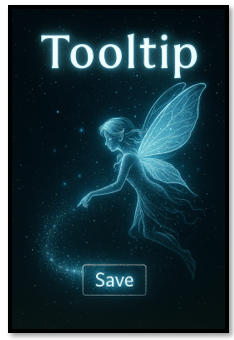

~The Main File~
11/24/2025
What is Main?
The main file is traditionally used as the starting point of any Python project. You can sort of think of it like a doorway, that you can use to access your project. The project has a bunch of rooms in it, which are files but the technical name for these file are modules, and these modules contain code, python code.
Create a file named main.py
What are Imports?
At the top of these modules, you will have import statements. Import statements allow you to reuse code from other files or libraries. You can use this code over, and over. So, you do not need to rewrite code that has already been written.
There are two ways of writing an import statement. You can use ‘from’ or ‘Import.’ Using from will take import one function, and using Import will import everything from the file. If you use Import and bring in an entire module, writing it might be a bit longer, but it keeps things like namespaces clean and clear.
What is a Namespace?
A namespace is the way that Python tracks everything in a project. It is sort of like a map that stores variables, functions, classes, etc. It is how Python knows what you mean when you start working with things like Buttons, tooltips, or even root.
There are things like built-in namespaces, this is the broadest namespace, because these are variables and functions that come with python, they are just there and anyone can use them. Then there is global, you can place global at the top of the file, and all of the functions on the page has access to them. Lastly, there is the local, if you place a variable inside a function, then only that function has access to the variable. And if you use a local variable, then you could place a function with the same name (which would be confusing to the developer) but it wouldn't be confusing to the program because it doesn't know there is another variable with the same name.
spell = "Expelliarmus" # Global
def cast_spell():
spell = "Lumos" # Local
print(spell) # Outputs: Lumos
cast_spell()
print(spell) # Outputs: Expelliarmus
Creating the Window
In the main file, after you write the Import statements the next thing that you want to do is to create the window. Without creating the window, the user would never see it.
tk is the module (short for tkinter), this comes from Python’s built -in GUI toolkit. GUI, stands for Graphical User Interface, and that is the window and everything you put in it.
Now Tk, is the class that is inside of the tk module. So, when you say tk.TK, you are talking directly to the class. We can make up any name for our window, but the typical name for it is root. root is an instance of tk.Tk. So, now we can use root, and it is just our window that you see.
Creating the Buttons
Now we want to make an instance of the button, again you can name your own instance anything you want. Here we are just using the name btn. We pass it the root, and then just add some text to it. The root and the text, that you want it to say is placed inside of the parenthesis.
Next, we pack the button. If you do not use pack, you will never see the button on the window. When we pack it, we pass the padding of 20 pixels for both the x and the y.
We also have a save_button and we create the save_button in the same way as we did our first button. We just have a different message in it. So, our text in the parenthesis id not the same.

Creating the Tool Tip
We actually have two of them. We have a Tool Tip on the both buttons. We call to our class Tool Tip (which we haven’t created yet). and then we want to pass to it which widget, we want to attach to it, and what we want the tool tip to say. You want to do the exact same thing for the save_button. The value for the first argument will again be the widget, you want the tool tip to attach to, and then the message that you want it to say.
Showing the Window
You have to place this last line on the window, because this is what makes the window show up on the computer screen so that the user can see it. It is very important, and if you do not see you window, double check and make sure you actually did add this to you file.
root.mainloop()
Here is the full file code
#Launches the app, creates widgets, and attaches tooltips to them
from tooltip import ToolTip
from tooltip_data import tooltips
import tkinter as tk
root = tk.Tk()
btn = tk.Button(root, text="Hover me")
btn.pack(padx=20, pady=20)
ToolTip(btn, "This is a magical tooltip!")
save_btn = tk.Button(root, text="Save")
save_btn.pack(padx=20, pady=20)
ToolTip(save_btn, tooltips["save_btn"])
root.mainloop()
Well, that’s just about all there is to this simple main.py file. But remember, the tooltips won’t actually work until we write the class that powers them. We’ll be conjuring up some of that code next week—so don’t miss it! Without it, your buttons will just sit there like sleepy goblins, waiting for a spark of magic.